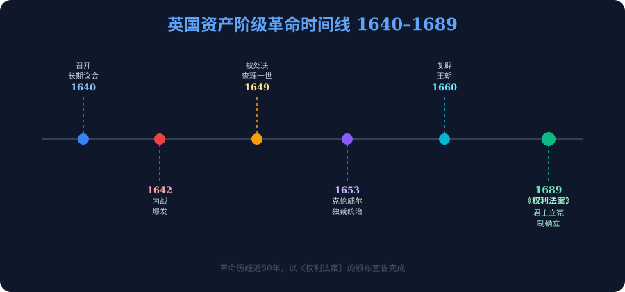
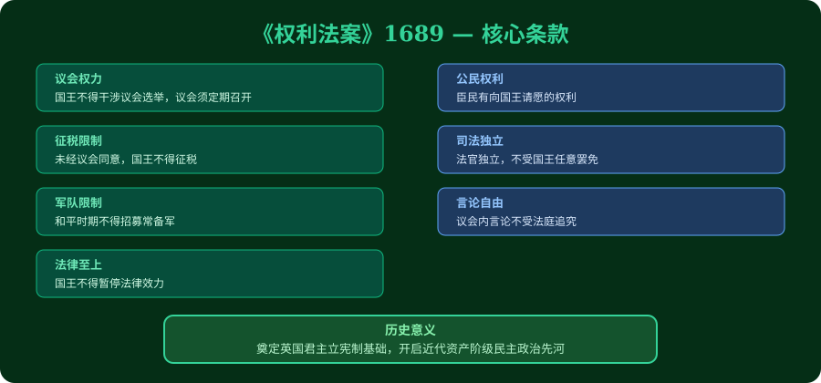

学习目标
记住
英国革命的主要时间节点:1640年、1649年、1688年,以及关键人物查理一世、克伦威尔、威廉三世
理解
革命爆发的根本原因(斯图亚特王朝与议会的冲突本质),以及光荣革命的"不流血"性质
分析
运用"背景-经过-结果"框架,分析英国资产阶级革命的历史必然性;对比两次革命高潮
评价
从多角度评价《权利法案》:它保障了什么?又局限在哪里?对世界历史产生了怎样的影响?
🗺️ 英国资产阶级革命
点击时代按钮切换疆域版图；悬停高亮边界；点击红色城市标记查看详情。
前测·摸底三题
做完三题,系统会为你推荐最适合的学习路径。诚实作答效果最佳。
英国革命爆发前,斯图亚特王朝与议会矛盾的核心是?
1688年"光荣革命"之所以被称为"不流血的革命",主要是因为?
《权利法案》的核心意义是?
模块一:革命为什么会爆发?
🌱 经济根源
16-17世纪圈地运动推动了工场手工业发展,资产阶级和新贵族迅速崛起。封建王权的干涉阻碍了他们的经济利益。
⚔️ 政治根源
斯图亚特王朝(詹姆斯一世、查理一世)鼓吹君权神授,试图不经议会批准便强行征税,甚至多次解散议会。这与英国自《大宪章》(1215年)以来"法律高于国王"的传统直接冲突。
✝️ 宗教导火索
国王压制清教徒(Puritans,多为资产阶级)。清教徒在宗教和政治上双重对抗专制王权,宗教冲突成为革命动员工具。
🔗 矛盾激化路径(因果链)
提示:记住这条链条,历史大题"原因分析"常从最左端的根本原因写起。
英国资产阶级革命爆发的根本原因是?
模块二:革命是怎么发展的?

📅 英国革命关键时间轴
👑 查理一世
斯图亚特王朝第二任国王,坚持君权神授,多次征收非法税赋,解散议会。内战失败后被俘,1649年被处死。他是第一个被自己的臣民公开审判并处决的英国国王。
⚔️ 奥利弗·克伦威尔
议会军领袖,清教徒。率"新模范军"赢得内战,处死国王,建立共和国。后就任护国主,实行军事独裁,直至1658年去世。他是革命的推动者,也是革命局限性的体现者。
🌿 威廉三世
荷兰执政,与英国公主玛丽结婚。1688年被议会邀请入主英国,詹姆斯二世出逃。1689年签署《权利法案》,成为英国君主立宪制的奠基人。
⚖️ 两次革命高潮对比
| 比较项 | 第一次高潮(1640-1660) | 第二次高潮·光荣革命(1688) |
|---|---|---|
| 方式 | 武装内战、处死国王 | 政变邀请、国王出逃(不流血) |
| 结果 | 共和国→军事独裁→王朝复辟 | 君主立宪制确立,《权利法案》颁布 |
| 意义 | 推翻封建专制,但成果不稳固 | 以法律形式最终固定革命成果 |
| 领导力量 | 克伦威尔领导的议会军 | 议会邀请外来君主,政治博弈 |
将下列事件拖动到正确的时间顺序(从早到晚):
模块三:革命取得了什么成果?

"凡未经议会同意,以国王权威停止法律或停止法律实施之僭越权力,为非法权力...... 凡未经议会准许,借口国王特权,为国王而征收,或供国王使用而征收金钱,超出议会准许之时限或方式者,皆为非法...... 议会议员之选举应是自由的。议会内之演讲辩论或议事之自由,不应在议会以外之任何法院或任何地方受到弹劾或询问。"
📖 《权利法案》核心内容解读
| 条款方向 | 限制了什么 | 保障了什么 |
|---|---|---|
| 征税权 | 国王不得未经议会批准征税 | 议会控制国家财政 |
| 立法权 | 国王不得任意停止法律实施 | 法律高于国王 |
| 军事权 | 和平时期不得在境内维持常备军 | 议会控制军队 |
| 议会权 | 国王不得干涉议会选举和辩论 | 议会自由与权威 |
🏛️ 君主立宪制的权力结构
核心逻辑:国王统而不治,议会掌握实权,法律约束一切
阅读上面的《权利法案》史料,回答:该法案主要是限制谁的权力?保护谁的权益?
模块四:这场革命影响了什么?
🇬🇧 对英国的影响
- 确立君主立宪制,议会掌握实权
- 为资本主义发展扫清政治障碍
- 推动了工业革命的到来
- 英国成为近代最早的资产阶级民主国家之一
🌍 对世界的影响
- 为美国独立战争、法国大革命提供了思想和制度范本
- 证明了"以立法限制王权"的可行性
- 推动了启蒙思想的传播(洛克等人从英国经验汲取灵感)
- 开创了世界资产阶级革命的先例
⚖️ 历史局限性
- 保护的是资产阶级权益,广大劳动人民并未获得民主权利
- 保留了君主制,是不彻底的革命
- 《权利法案》中没有普通公民的政治权利
- 妇女权利被彻底忽视
🔍 深层理解:为什么英国选择"君主立宪"而非"共和国"?
克伦威尔独裁的失败证明:彻底推翻君主制带来的权力真空反而更危险。议会保留权力受限的国王,用最小代价换取政治稳定。
📜 史料二:不同视角看英国革命
"光荣革命是英国自由的胜利......是理性与宽容战胜专制与迷信的里程碑。"
"英国革命是一场资产阶级革命,其本质是资产阶级夺取政权,建立有利于资本主义发展的政治体制。"
它们并不矛盾,而是各有侧重:
• 视角A从政治自由的角度肯定了革命对限制专制的意义,代表着英国本土的主流叙事
• 视角B从阶级分析的角度揭示了革命的局限性--它首先是资产阶级的胜利,不是全民的解放
历史解释的启示:同一个历史事件,站在不同的立场、用不同的分析框架,会得出不同但都有价值的结论。
评价历史,要看清楚论者的出发点,并寻找史料证据加以验证。
有观点认为:"光荣革命不是真正的革命,因为它没有流血,也没有改变社会根本结构。"你是否同意这一观点?请说明理由。
💡 分析提示:思考"革命"的定义;光荣革命改变了什么?没有改变什么?
"1640年点火,1649年斩首,1653年独裁,1660年复辟,1688年光荣,1689年立宪"
记住这条时间线,再配上"根本原因=封建制度阻碍资本主义"和"最终成果=君主立宪+《权利法案》", 英国革命的考点就全部覆盖了。
⚠️ 易错点诊断室
混淆"根本原因"与"直接原因"
根本原因=封建制度阻碍资本主义;直接原因=查理一世征税引发议会冲突。考试选项里常把两者混在一起。
以为"光荣革命=革命完成"
光荣革命只是结束了动荡,真正确立制度的是第二年(1689年)的《权利法案》。时间点不能混淆。
《权利法案》=全民民主
错!《权利法案》是资产阶级的宪章,普通工人、农民、女性并未获得选举权。英国真正的普选是19-20世纪才逐步实现的。
把克伦威尔定性为"坏人"
克伦威尔推动革命有功,后期走向独裁有过。历史评价要一分为二,功过并论。
综合任务
📝 历史小论文:英国资产阶级革命的意义评析
请运用本课所学,写一篇150-200字的历史小论文,论述英国资产阶级革命的历史意义。 要求:论点明确,有史实支撑,至少评析一点局限性。
框架提示(按段落填写):
第一段(论点):英国资产阶级革命是一场具有的历史事件。
第二段(论据1):从政治上看,它通过,确立了君主立宪制......
第三段(论据2/影响):从世界历史看,它为提供了......
第四段(局限性):但该革命也存在局限性:......
关键词(可选用3-4个):
仅凭以下要求,独立写作:
论点 → 至少两个史实论据 → 局限性评析 → 总结性评价
🤖 AI 学伴·多模态互动区
将你对英国革命的疑问、思考或一段文字输入下方,让 AI 学伴帮你深化理解。也可以上传历史路线图、读书笔记,让 AI 帮你点评。
后测·五题验收
前测做了三题,现在用五题检验你的学习成果。
1640年,英国革命爆发的直接导火索是?
克伦威尔在英国革命中扮演了什么角色?以下说法最准确的是?
1689年颁布的《权利法案》在英国宪政史上最重要的意义是?
下列关于英国资产阶级革命的表述,不正确的是?
阅读以下材料:
"国王应在议会之中、在法律之下。议会之所以凌驾于国王之上,是因为议会代表着全体国民的意志。"--洛克,1690年
这段话反映了英国革命后建立的什么政治原则?
前置知识复习:文艺复兴核心思想
如果你对前置知识不确定,先用5分钟复习这些要点,再回到正课。
| 核心概念 | 含义 | 与英国革命的关联 |
|---|---|---|
| 人文主义 | 强调人的价值与理性,反对以神为中心 | 为质疑"君权神授"提供了思想武器 |
| 理性精神 | 用理性而非信仰判断事物 | 资产阶级用理性质疑封建制度的合理性 |
| 个人权利意识 | 强调个体尊严和自由 | 推动了对国王专制权力的反抗 |
拓展思考
🔗 前后联系
上承:文艺复兴→宗教改革→英国革命(思想解放→宗教冲突→政治革命)
下接:英国革命→美国独立战争(1775)→法国大革命(1789)→工业革命(18c末)
💡 深入思考题
1 如果克伦威尔没有走向独裁,英国的政治进程会不同吗?
2 英国为什么至今保留君主制?它的国王/女王有什么实际权力?
3 "光荣革命"对中国近代史上的维新变法有没有影响?
📚 推荐阅读
- 洛克《政府论》(节选)--理解《权利法案》的理论基础
- 《英国通史》第三卷--钱乘旦著
- 纪录片:BBC《英国史》第三集